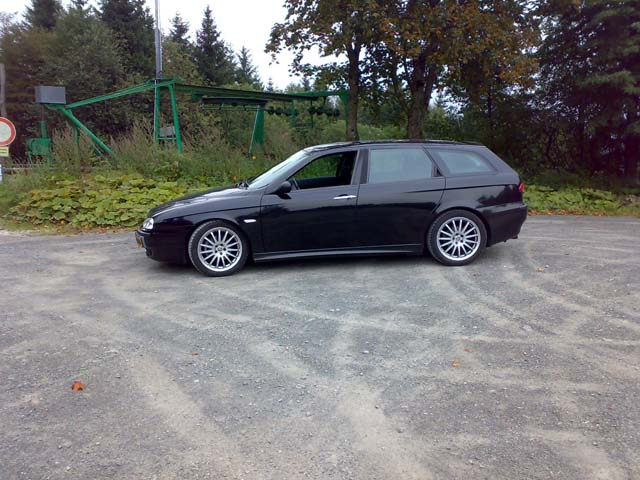
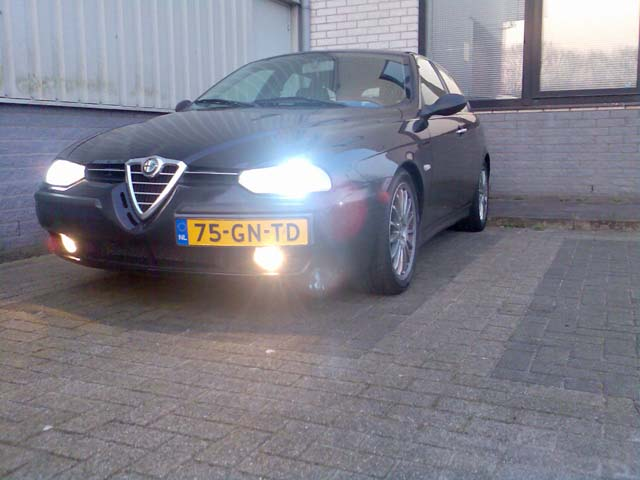
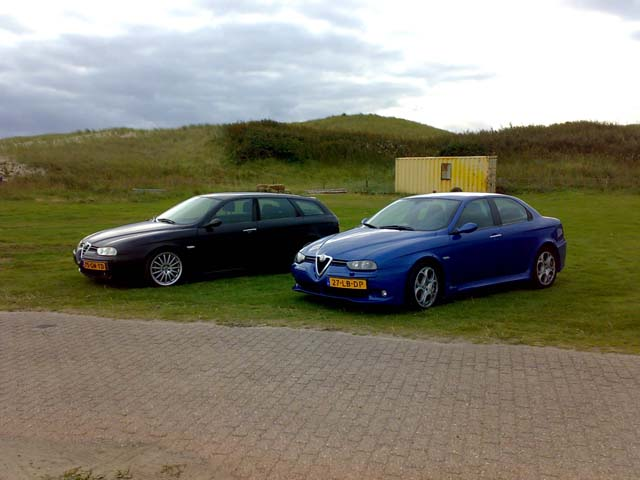
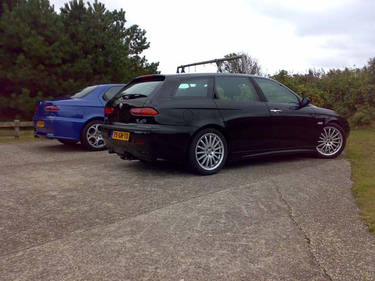
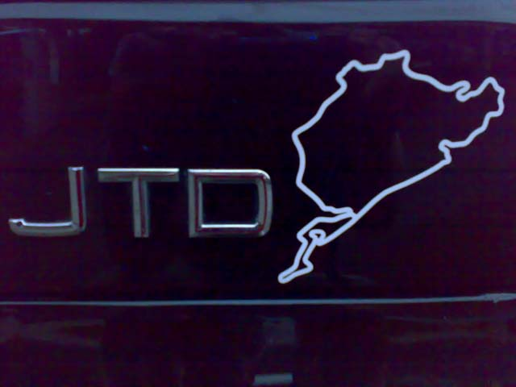
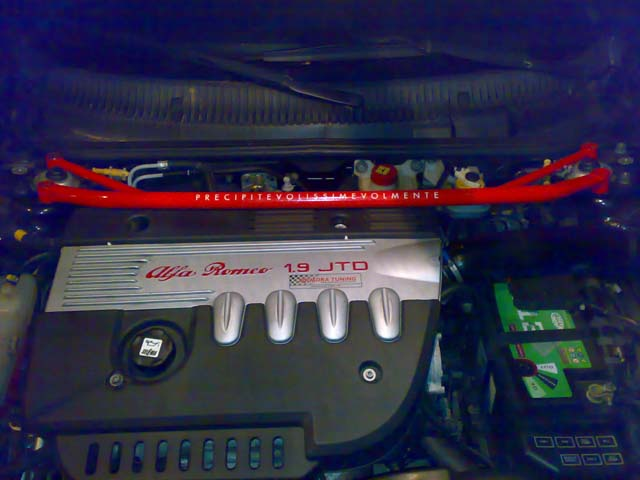
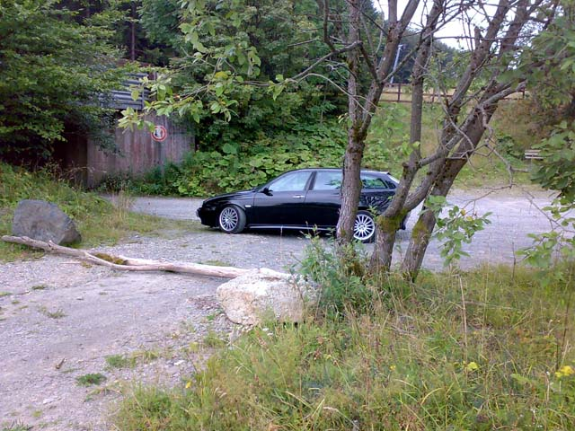
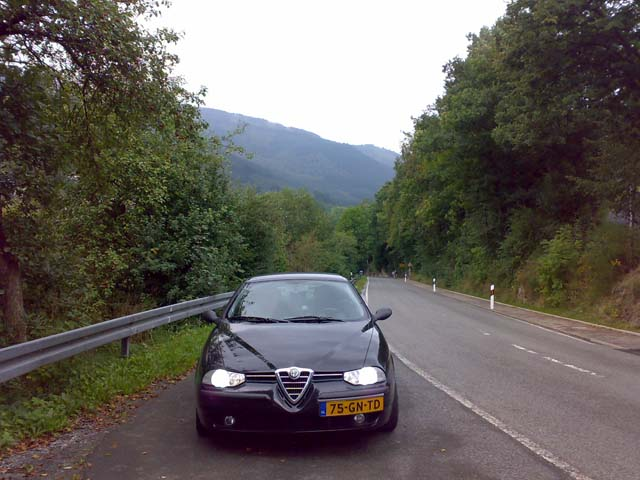
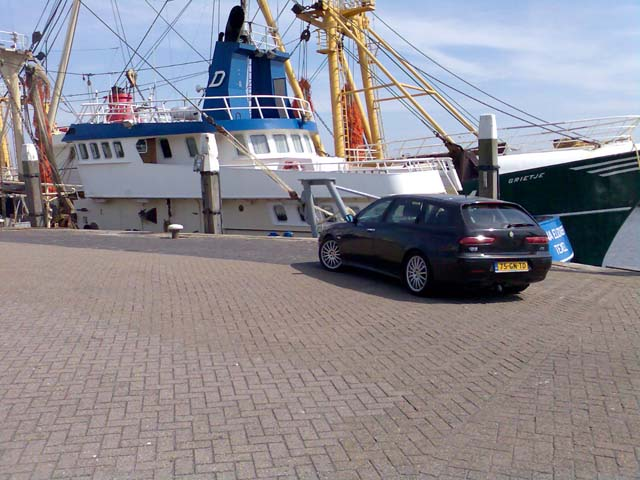
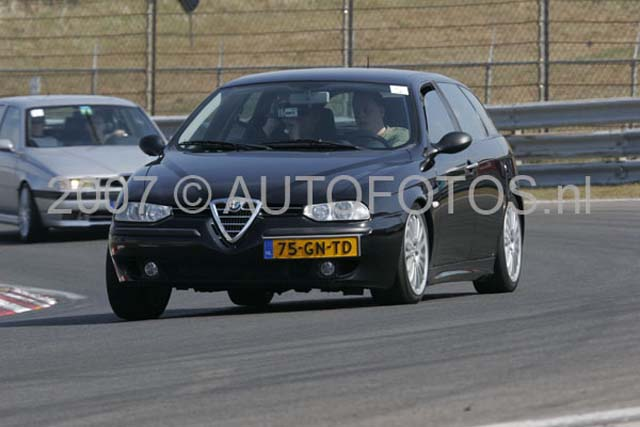

Frits Hooft - Harderwijk, The Netherlands
Alfa 156 SW 1.9jtd from 2001.
Chiptuned by Squadra.
Standard 110bhp 275Nm now 147bhp 340Nm
New 115bhp Turbo
Xenon headlights
Alpine stereo, original Subwoofer and an extra one by Sony
Front:MTX compo
Rear: Infinity
17inch GTA alloy's with Pirelli P7000
Sports Interieur.
Koni Yellow springs and adjustable Shocks









Submitted: 2008 - April
![[Prev]](bw_prev.gif)
![[Index]](bw_index.gif)
![[Next]](bw_next.gif)